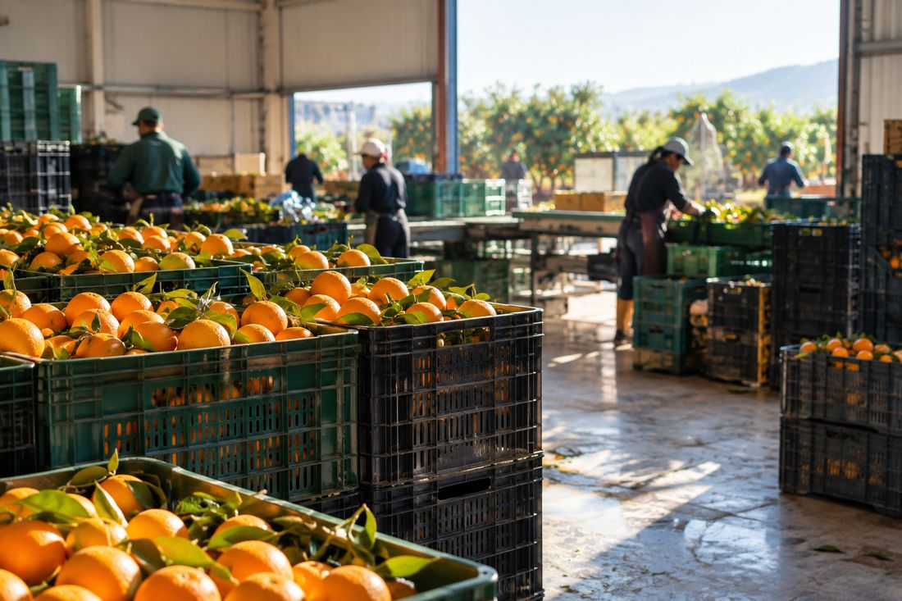
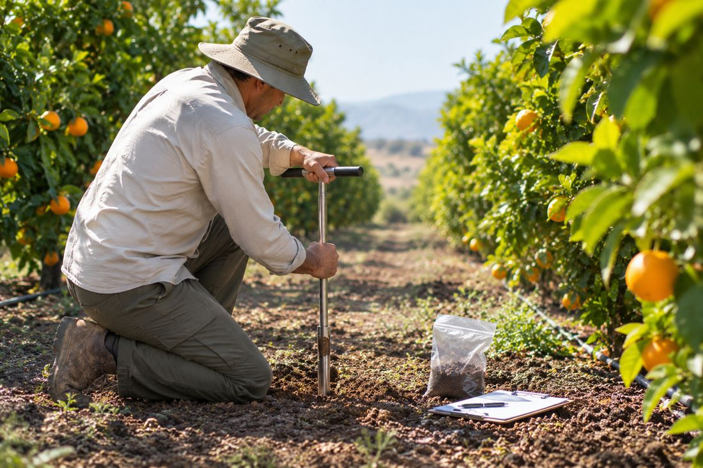
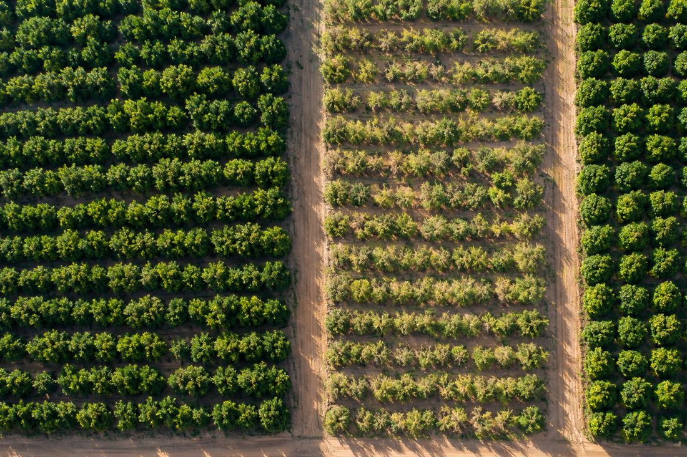
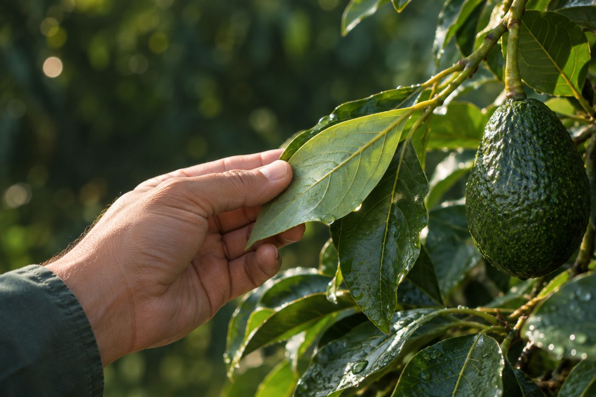

ÉTAPE 01
On délimite vos secteurs
Vous nous indiquez les contours de vos parcelles et les cultures en place. Aucun capteur, aucun matériel à installer, la mise en route se fait à distance.

AccueilPour qui
Coopérative de deux cents adhérents ou domaine d'un seul tenant, la question est la même : à partir d'une certaine surface, vous ne pouvez plus tout voir. C'est là que la détection à distance change l'économie de votre exploitation.
Coopératives et groupements
Vous voyez quelles exploitations décrochent et vous envoyez votre technicien là où il sert.

Domaines, stations et exportateurs
Une anomalie détectée au printemps est corrigeable. Constatée en réception, c'est une perte.
Agrégateurs, bureaux d'études et assurance récolte
Historique daté, mesures horodatées, analyses rattachées au secteur. De quoi objectiver un conseil, un financement ou un sinistre.

Comment ça se passe
Vous nous indiquez les contours de vos parcelles et les cultures en place. Aucun capteur, aucun matériel à installer, la mise en route se fait à distance.
L'historique satellite est remonté, confronté aux conditions climatiques de la période et à vos analyses de laboratoire si vous en avez déjà.
On passe ensemble sur ce que l'analyse a trouvé, ce qui relève du normal et ce qui mérite votre attention. Vous décidez de la suite.
Et votre agronome ?
Votre agronome ne peut pas passer sur tous les secteurs chaque semaine, et l'œil ne détecte pas un déficit hydrique avant que la plante ne l'exprime. Firmaty priorise ses déplacements et documente ses décisions.
Il garde la main sur le diagnostic final.
Lire les questions fréquentes
Démonstration
L'historique satellite est rétroactif : nous analysons vos secteurs sur les mois écoulés, sans rien installer et sans attendre. Dites-nous ce que vous pilotez, on vous montre ce que la plateforme en tire.
Demander une démonstration